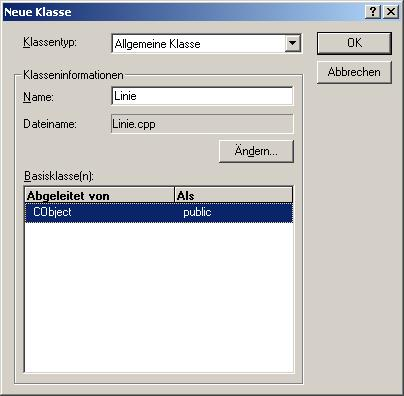

- Zuerst wird eine Neue Klasse für einen Strich gebraucht.
-> Einfügen
-> Neue Klasse...
-> Allgemeine Klasse
-> Klassenname : Linie
-> Abgeleitet von CObject
-> Sollte nach bestätigen mit OK ein Fehlerdialog erscheinen einfach auf OK drücken(unwichtig :-)

- Hinzufügen von Member-Variablen zur Klasse Linie zur vollständigen Beschreibung einer Linie:
- mit der rechten Maustaste auf die Klasse Linie klicken, Member-Variable hinzufügen...
(Mehrmals wiederholen)
- Variablenname=startpunkt; Variablentyp=CPoint
- Variablenname=endpunkt; Variablentyp=CPoint
- Variablenname=farbe; Variablentyp=COLORREF
- Variablenname=dicke; Variablentyp=int
- Includieren der Headerdatei der Klasse Linie in die Datei CZeichnerView.cpp und CZeichnerDoc.cpp:
-> CZeichnerView.cpp:
// ZeichnerView.cpp : Implementierung der Klasse CZeichnerView
//
#include "stdafx.h"
#include "Zeichner.h"
#include "ZeichnerDoc.h"
#include "ZeichnerView.h"
#include "StrichDialog.h"
#include "Linie.h"
#ifdef _DEBUG
#define new DEBUG_NEW
#undef THIS_FILE
static char THIS_FILE[] = __FILE__;
#endif
-> CZeichnerDoc.cpp:
// ZeichnerDoc.cpp : Implementierung der Klasse CZeichnerDoc
//
#include "stdafx.h"
#include "Zeichner.h"
#include "ZeichnerDoc.h"
#include "Linie.h"
#ifdef _DEBUG
#define new DEBUG_NEW
#undef THIS_FILE
static char THIS_FILE[] = __FILE__;
#endif
- Hinzufügen einer Variable des Typs CObjectList zu der Klasse CZeichnerDoc:
Wichtig: Daten sollten immer in der Klasse CZeichnerDoc abgelegt werden, weil das von Windows so vorgesehen ist. (z.B.: Speicher-/Ladefunktion befindet sich hier)
- Mit rechter Maustaste auf Klasse CZeichnerDoc klicken, Member-Variable hinzufügen...
- Variablentyp=CObjectList Variablenname=ObjektListe
- Nun muss jedes Mal, wenn ein neuer Strich gezeichnet wird, dieser zur ObjektListe hinzugefügt werden:
Dazu muss der Handler für das Loslassen der Maustaste abgeändert werden. (in der Klasse CZeichnerView; Methode OnLButtonUp)
Der Handler sollte dann so ungefähr aussehen:
void CZeichnerView::OnLButtonUp(UINT nFlags, CPoint point)
{
// TODO: Code für die Behandlungsroutine für Nachrichten hier einfügen und/oder Standard aufrufen
// Holen der Dokumentklasse
// wird gebraucht, weil sich dort die ObjektListe befindet
CZeichnerDoc* pDoc = GetDocument();
// Prüfe, ob pDoc != NULL, sonst wirf Exception
ASSERT_VALID(pDoc);
// Neue Linie anlegen
Linie *l = new Linie();
// Merken des Endpunktes, eigentlich sinnlos,
// weil sowieso gleich wieder woanders gebraucht
// Trotzdem zur besseren Übersicht
endpunkt = point;
// Zuweisen der aktuellen Eigenschaften der Linie
l->dicke = strichdicke;
l->startpunkt = startpunkt;
l->endpunkt = endpunkt;
l->farbe = strichfarbe;
// Anfügen der Linie am Ende der ObjektListe
pDoc->ObjektListe.AddTail(l);
// Neuzeichnen aller Elemente, vorher löschen des Bildschirms
Invalidate(true);
CView::OnLButtonUp(nFlags, point);
}
- Dass alle Elemente der Liste ObjektListe wirklich gezeichnet werden, muss noch die Methode OnDraw der Klasse CZeichnerView angepasst werden:
void CZeichnerView::OnDraw(CDC* pDC)
{
CZeichnerDoc* pDoc = GetDocument();
ASSERT_VALID(pDoc);
CPen *oldpen,*newpen;
POSITION pos;
Linie *l;
pos = pDoc->ObjektListe.GetHeadPosition();
while (pos != NULL)
{
// Linie holen und in Zeiger auf Linie konvertieren
l = (Linie*) pDoc->ObjektListe.GetNext(pos);
// Neuen Zeichenstift anlegen mit Informationen aus Linie
newpen = new CPen(PS_SOLID,l->dicke,l->farbe);
// Neuen Stift einstellen, alten merken
oldpen = pDC->SelectObject(newpen);
// Verschiebe Grafikcursor zu Position startpunkt (ohne zu zeichnen)
pDC->MoveTo(l->startpunkt);
// Zeichne Linie zum endpunkt
pDC->LineTo(l->endpunkt);
// wieder alten Stift einstellen
pDC->SelectObject(oldpen);
// neuen Stift wieder löschen
delete newpen;
}
// ZU ERLEDIGEN: Hier Code zum Zeichnen der ursprünglichen Daten hinzufügen
}
- Für guten Programmierstil sollten alle Linien beim Beenden des Programmes wieder entfernt werden. Dies wird am Besten im Destruktor von CZeichnerDoc erledigt.
Hinweis: Ein Destruktor einer Klasse hat keinen Rückgabewert(nicht mal void) und hat den Namen '~'+Name der Klasse. Er wird beim Zerstören der Klasse automatisch aufgerufen.
CZeichnerDoc::~CZeichnerDoc()
{
POSITION pos = ObjektListe.GetHeadPosition();
// Löschen jeder einzelnen Linie,
// weil sie nicht automatisch gelöscht werden
while (pos != NULL)
delete (Linie*)ObjektListe.GetNext(pos);
// Löschen der Verweise auf die Linien in der Liste
ObjektListe.RemoveAll();
}
- Fertig